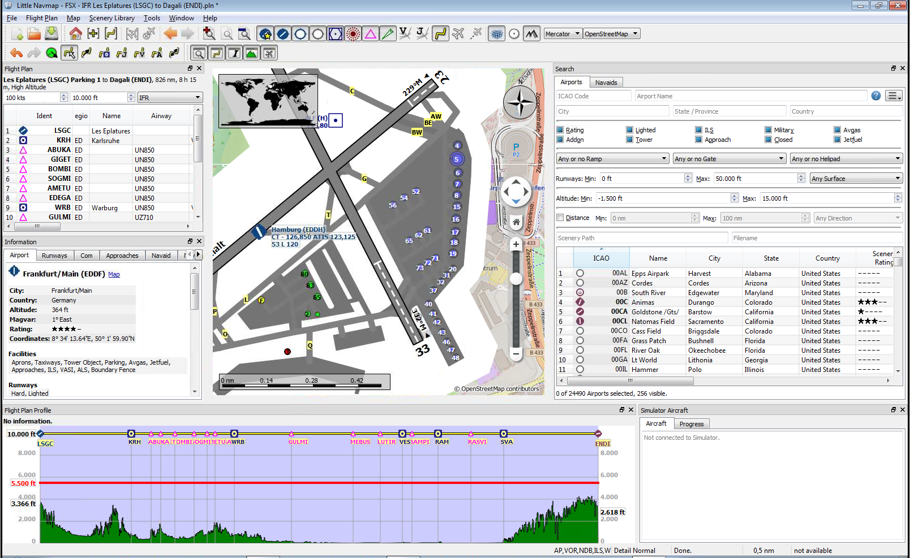
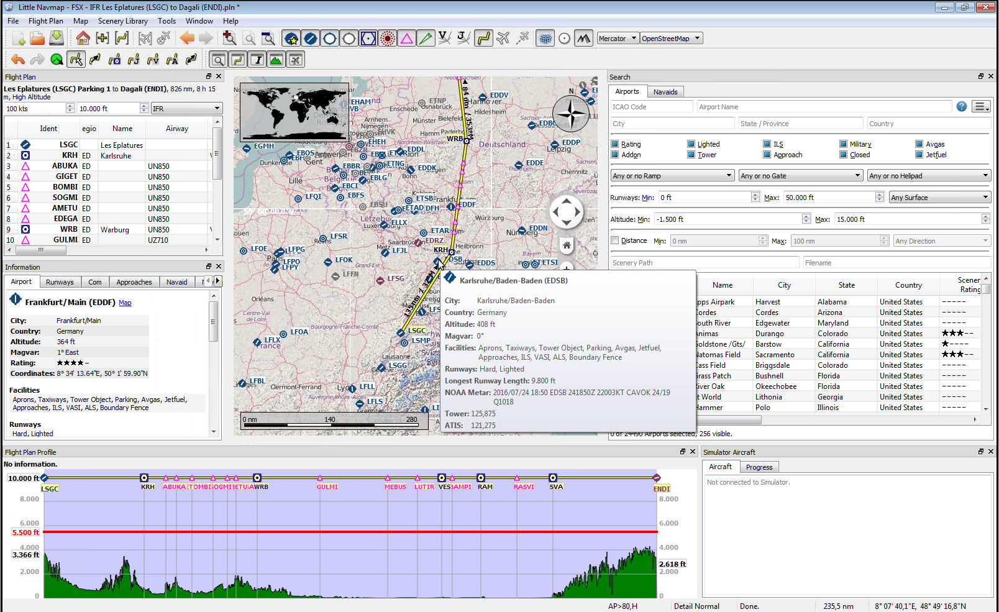
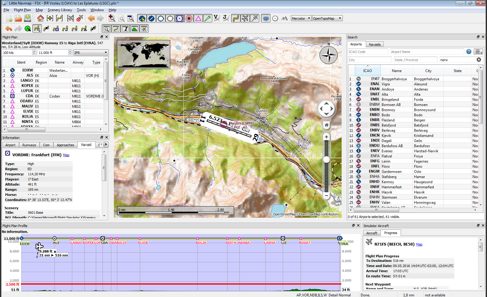
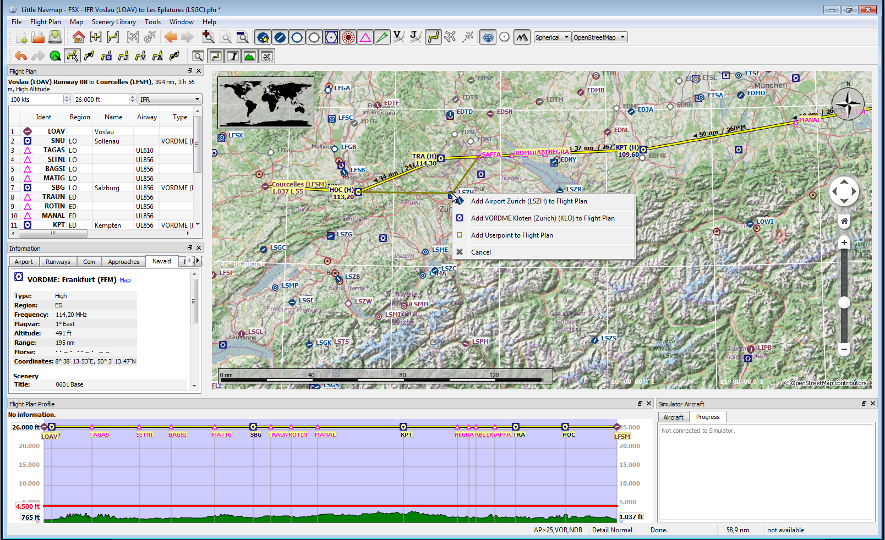
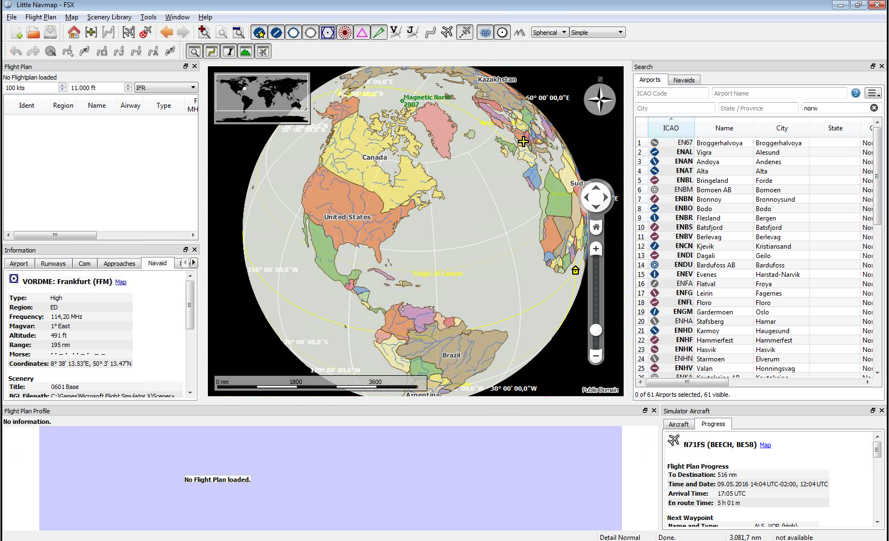

Not yet relased.
Little Navmap with map and sourrounding docked windows showing airport Hamburg runway overview and ILS feathers:
High level view of the airport diagram of EDDH:
Detailed view of the airport diagram. Shows blue gates on the right and a few green general aviation ramp parking on the left. Long displaced threshold of runway 33 is visible:

Tooltip showing airport information:

A complex search: Find all airports within a distance between 200 and 400 nautical miles from Frankfurt (EDDF). Airports should have a rating greater than 0 and should have at least one lighted runway. Military and closed airports are excluded. The resulting airports are highlighted on the map by selecting them in the search result table:
View at a Swiss airport using OpenStreetMap theme and hill shading:
View at a Swiss airport using OpenTopoMap theme:

Drag and drop route editing: Replacing VOR TRA in the flight plan with another one by simply clicking and moving the waypoint TRA onto KLO. Selection menu pops up for disambiguation:

Spherical map projection with Simple map theme selected:
